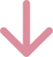

/ CATERINA DELÁS.

/ SOBRE MÍ
Diseñadora e ilustradora orientada a la creación de identidad visual, proyectos editoriales y comunicación de marca. Fusionando la exploración analógica (mucha) con herramientas digitales, abarcando principalmente la ilustración, diseño editorial, bajadas a piezas reales como afiches, merch y publicaciones varias para redes sociales. PD. Me gusta dibujar perritos, es inevitable.